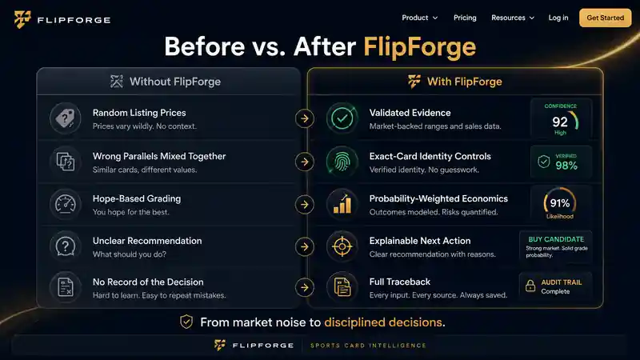

Resolve year, set, number, parallel, variation, grader, and grade before price evidence gets a vote.
CARD INTELLIGENCE
Before you buy. Know Why.
You are the one putting money on the line. A convincing number should never make the decision for you.
Illustrative decision · not live market data
Last comp$900
Listed at$850
Looks like a $50 edge. Easy buy — or is it?
Before you trust the discount, know whether that $900 comp actually belongs to this card.
FlipForge helps you verify the exact card, challenge the evidence, see the grade premium and risk, and understand the next move before you commit your money.
Illustrative scenario. Decision support only; no transaction, grade, outcome, or profit guarantee.
FlipForge decision checkAnalyzing evidence
Last comp$900
vs.Listing$850
$50 under comp. The price looks easy. The evidence does not.
01
IdentityParallel mismatch detected
Check02
Evidence2 of 3 records cannot support the target
Filter03
RiskThe apparent $50 edge is unsupported
Reassess04
DecisionVERIFY before buying
ProtectedWhat changed?The listing price did not. Your confidence should.
What changes for you
Walk into the decision knowing what deserves your confidence.
You do not need another screen full of numbers. You need to know which facts matter, which ones do not, and what to do next.
Accepted records, excluded records, missing proof, and uncertainty stay separate instead of collapsing into one precise-looking number.
BUY CANDIDATE, WATCH, VERIFY, PASS, or grading guidance comes with the reason trail and the risk that could change it.
THE ENEMY IS FALSE CONFIDENCE
A price can look precise and still be wrong for the card in front of you.
A $900 sale does not support an $850 listing if the cards are not the same parallel or variation.
A legitimate sale can still mislead when the market has moved since it happened.
One precise transaction is not the same thing as a dependable evidence base.
PSA 10 upside can look profitable while realistic lower-grade outcomes erase the apparent edge.
From price checking to decision confidence
Turn market noise into a decision you can defend.
Keep using the marketplaces and comp tools you already know. FlipForge is the layer that asks whether the information actually supports the decision in front of you.

Evidence is the product boundary
A sale should influence your decision only when the evidence earns the right to count.
A completed sale can still be the wrong grade, wrong parallel, duplicate source, lot, or unresolved record. FlipForge separates what supports your card from what must stay out—and preserves the reason.
What is allowed to support your card.
Evidence enters the supported set only after the target identity and record quality clear the relevant checks.
- Exact card identity and grade lane
- Completed-sale status and usable price
- Source, date, and provenance remain visible
What FlipForge refuses to blend in.
Bad evidence is not made safer by averaging it with good evidence. Decision-critical mismatches stay out.
- Wrong parallel, variation, or grade
- Duplicates, lots, or unresolved mismatches
- Active asking prices presented as sold support
What you can inspect later.
The goal is not a black-box score. You should be able to see why a record counted, why another did not, and what remains uncertain.
- Accepted and excluded records stay distinguishable
- Warnings and unresolved assumptions stay visible
- The saved decision retains its reason trail
Same player. Same year. Wrong card.A Refractor claim cannot be supported by a Base / Unstated sale.
That record can remain visible as context or traceback, but it cannot quietly become evidence for the claimed card.
Target claimOhtani #150 PSA 10 · Refractor
Evidence gateBase / Unstated sale · EXCLUDED
Decision effectSupported value withheld · VERIFY
The Decision Dossier
Your card has a price. FlipForge gives you the case behind it.
A Decision Dossier connects identity, accepted and excluded evidence, uncertainty, recommendation state, and the next required check. The reasoning stays visible instead of disappearing behind a score.
ILLUSTRATIVE SAMPLE · NOT LIVE MARKET DATA2018 Topps Chrome Shohei Ohtani #150 · PSA 10
VERIFY- Claimed parallel
- Refractor · unverified
- Accepted evidence
- Base identity only
- Excluded evidence
- Base / unstated sale
- Supported value
- Withheld
- Liquidity
- Not scored yet
- Next action
- Verify parallel
Why: the completed-sale record does not prove the claimed parallel, so it cannot support value or purchase guidance.
Decision support only. FlipForge does not authorize transactions or guarantee price, grade, profit, or transaction outcomes. Terms
Trust has to be earned
We are testing the evidence process before asking you to trust performance claims.
FlipForge separately reviews whether its own evidence process is disciplined enough to support future public performance claims. That is why uncertainty and held-out records remain visible.
Identity, grade, parallel, completed-sale status, price, sale date, and duplicate handling were reviewed under a governed audit.
Records that cleared the evidence rules remained eligible to support Card Intelligence after reconciliation.
Questionable or ineligible records were kept from influencing supported evidence rather than being forced into the result.
Required evidence-quality checks failed on these records, making uncertainty visible instead of hiding it behind a precise number.
Try FlipForge
See one decision change when the assumptions change.
A strong PSA 10 headline is not enough. Walk through the same decision the way a collector actually experiences it: identify the card, set realistic outcomes, add costs, then see the guidance.
 ASK FLIPFORGE
ASK FLIPFORGEIllustrative · Auto preview
Illustrative grading scenario
2020 Panini Prizm Joe Burrow #307 · Raw
The PSA 10 upside looks attractive. The full grading economics need to prove it.
Step 1 of 4 · Define the card
DEFINE INPUTSStart with the card you actually own.
FlipForge separates the raw card baseline from the best-case graded headline before modeling any outcome.
Raw identity definedYear, set, player, card number, and current state are explicit.
Raw baseline stays separateThe current card is not valued as though a future grade already happened.
Next inputSet realistic grade probabilities before comparing upside.
Decision support only. FlipForge does not authorize transactions or guarantee price, grade, profit, or transaction outcomes. Terms
Built around the collector
The product exists for the moment before your decision becomes your money.
FlipForge is not a dealer operating system and it is not trying to replace the tools you already use to search the market.
Buyers
Confirm the exact card and determine whether the available evidence actually supports the asking price before committing money.
See identity controlsGrading planners
Test fees, downside, and grade-outcome scenarios without turning the PSA 10 headline into an assumed future.
Explore grading economicsCollectors who hate guessing
Keep noisy comps, liquidity, risk, and missing proof visible instead of forcing weak evidence into a confident answer.
Review the evidence methodCurrent beta recruiting focus
Modern football rookie autos + scarce parallels
FlipForge remains Card Intelligence for sports cards broadly. The first recruiting wedge stays narrow so we can deeply test the decisions where parallel confusion, grade premiums, and thin evidence make bad assumptions expensive.
Join the focused betaWhere FlipForge fits
Use the data tools you trust. Add a decision layer that challenges the evidence.
Marketplaces help you find cards. Sales databases help you find transactions. FlipForge helps you decide whether those facts deserve your confidence.
Find the card and see what sellers are asking.
Understand historical transactions and market context.
Resolve the exact card, challenge the evidence, expose the risk, and understand the next action.
How it works
One disciplined path from the card you found to the decision you own.
The workflow stays simple on purpose. Each stage answers a different question before the recommendation appears.
Decision accountability
If FlipForge earns your trust, the original decision should survive inspection later.
We preserve what the system believed when the decision was made, then compare it with what happened at later checkpoints. The point is calibration—not rewriting history to make the model look right.
Preserve the decision, confidence, evidence quality, liquidity, risk, and reason trail as they existed at the time.
Review what changed and whether the original assumptions are beginning to hold, weaken, or remain unresolved.
Compare confidence, liquidity, volatility, and evidence quality with the developing outcome—not only the headline price.
Classify what held, what missed, and where the original decision was too aggressive, too conservative, or appropriately cautious.
The proof questionDid the decision age well?
The long-term moat is evidence-calibrated intelligence: measure the system against outcomes, then improve only when the sample supports it.
Proof boundary: FlipForge has not authorized a public accuracy percentage. Decision support only; no outcome or profit guarantee.
Controlled Private Beta
Bring us the card you are actually thinking about buying.
Challenge the identity, the comps, the grade premium, and the reasoning. The beta is here to prove whether FlipForge helps you make a more defensible decision.
No credit card required. Private beta participation does not create a paid subscription. Not ready to test yet? Join the launch list.